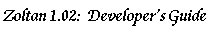

Adding New Load-Balancing Algorithms to Zoltan
The Zoltan library is designed so that adding new load-balancing algorithms
to the library is simple. In many cases, existing code can be easily modified
to use the interface query functions to build the data structures needed
for the algorithm. The process for adding new algorithms to the library
is described below; more detail is provided at each link.
[Table of Contents | Next:
Load-Balancing Interface Routines | Previous:
Debugging Utilities]